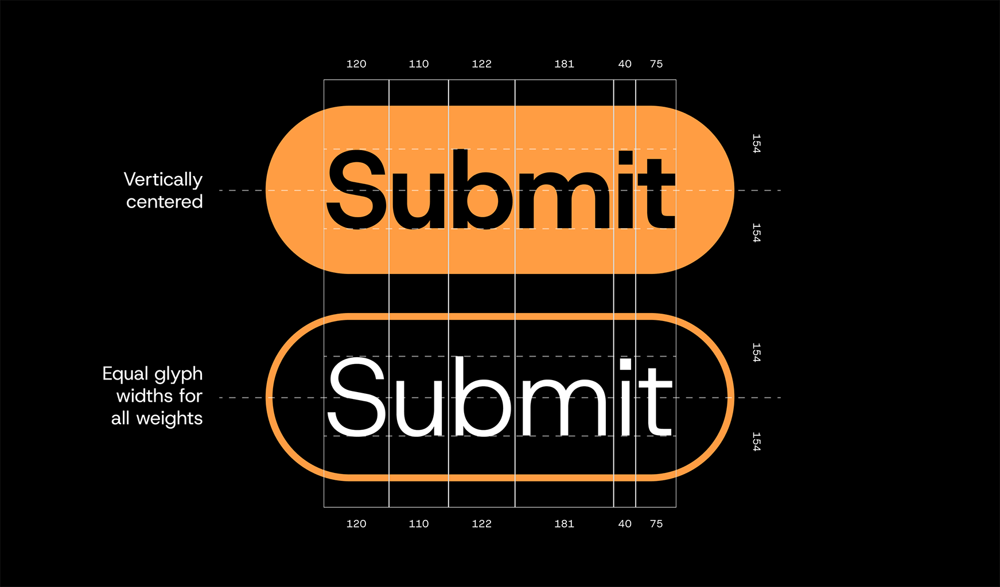
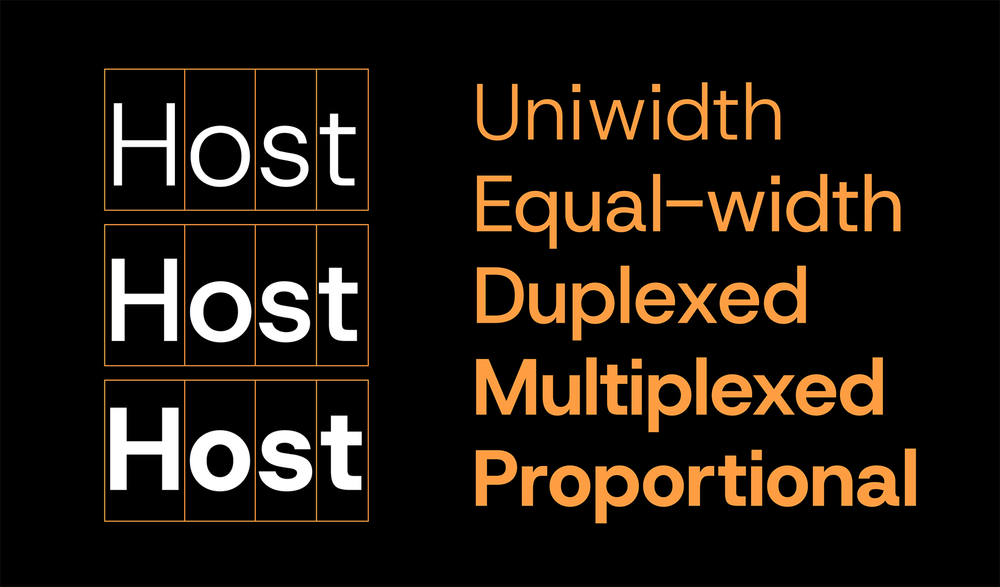

Host Grotesk is a uniwidth sans serif variable font tailored by Element Type for modern user interfaces. It features uniform letter widths and spacing across all weights and corresponding italics, ensuring seamless adaptability without compromising layout consistency.
To contribute, see github.com/Element-Type/HostGrotesk
As a uniwidth typeface, Host Grotesk allows for smooth transitions between font weights without disrupting overall design and layouts. For instance, a button's size remains constant even when the font weight increases during a hover state. Similarly, making a part of a sentence bolder will not push the letters to the next line.
Calibrated for both display and text applications, Host Grotesk has low contrast stroke modulation and closed terminals that complement the straightforward construction of its letterforms, making it an excellent choice for digital media. The proportions are balanced between a generous geometric sans and a compact grotesque, suitable for both display sizes and small body copy.
The Host Grotesk family is built on Jonny Pinhorn's beloved Poppins (Indian Type Foundry, 2020). While most letters are reworked and modified for the new look and duplexed proportions, Poppins' soft and approachable essence remains visible. A reliable and cohesive type family for user interfaces, branding, and communication materials, combining the contemporary workhorse category with the elevated functionality of uni-width proportions.
